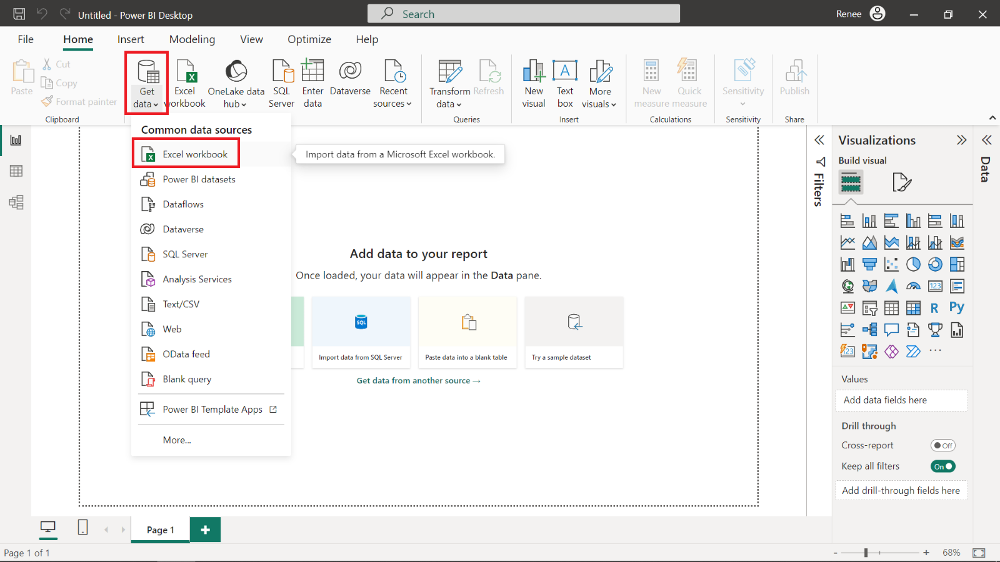
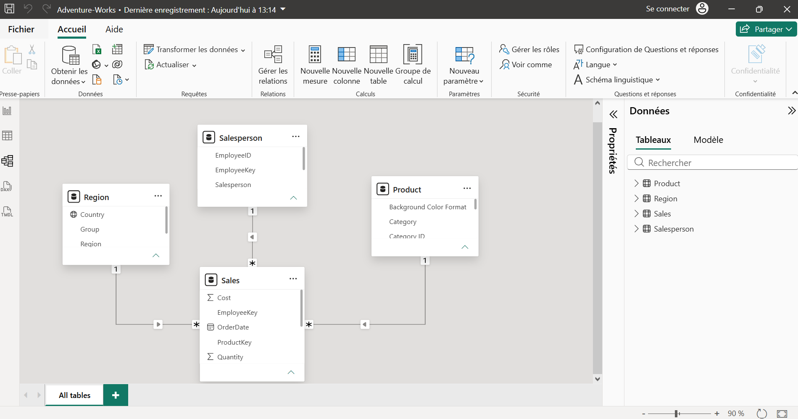

L'intégration des données
L'intégration est l'étape qui permet de rassembler des informations éparpillées provenant de sources multiples pour n'en faire qu'une seule vue. C'est ce qui transforme une mosaïque de fichiers disparates en un ensemble cohérent. Pour le Data Analyst, c'est le point de départ indispensable pour avoir une vision fiable du passé et une meilleure compréhension du présent.
1. MySQL / SQL Server
Au-delà de leur capacité à stocker des données, les bases SQL sont de véritables atouts. Avec les bons outils, elles me permettent de centraliser des données venant d'Excel, de fichiers plats ou d'autres applications.
2. Langage R
R est particulièrement puissant pour fusionner des jeux de données complexes. Grâce à des bibliothèques dédiées, je peux importer des sources très différentes et les aligner rapidement.
3. Power Query et Modélisation
C'est sans doute l'un des outils les plus intuitifs pour l'intégration. Avec Power Query, je peux connecter des sources variées en un rien de temps. Le langage M me donne une flexibilité totale, et la vue Modèle permet de lier ces données entre elles pour créer des rapports fluides et complets.


4. Python (Pandas / NumPy)
Avec python, j’utilise la bibliothèque Pandas, qui permet de simplifier la lecture de tous types de formats (CSV, Excel, SQL) pour les centraliser dans un dataframe unique.